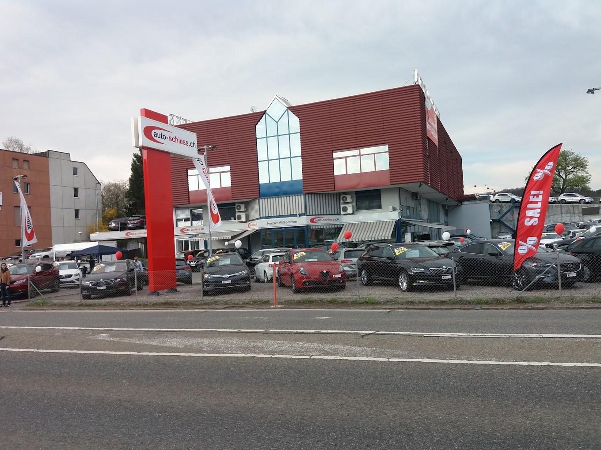
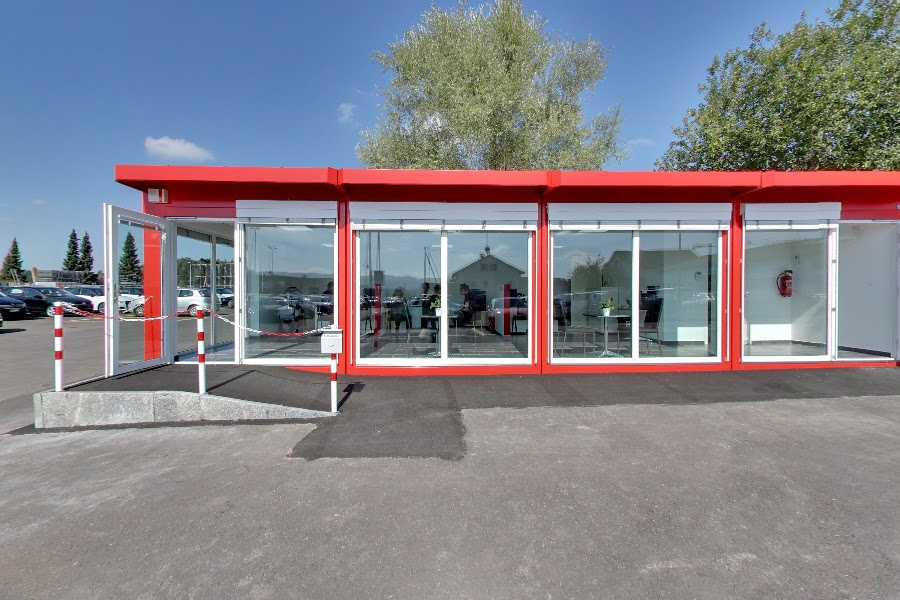

<!DOCTYPE html>
<html lang="it">
<head>
    <meta charset="UTF-8">
    <meta name="viewport" content="width=device-width, initial-scale=1.0">
    <title>Auto-Schiess Route</title>
    <link rel="stylesheet" href="https://cdnjs.cloudflare.com/ajax/libs/leaflet/1.7.1/leaflet.css" />
    <style>
        body {
            margin: 0;
            padding: 0;
            font-family: Arial, sans-serif;
            background-color: #f5f5f5;
        }
        #map {
            width: 100%;
            height: 700px;
            border-radius: 10px;
            box-shadow: 0 4px 8px rgba(0,0,0,0.2);
            margin-bottom: 0;
            position: relative;
        }
        .container {
            max-width: 1200px;
            margin: 0 auto;
            padding: 20px;
        }
        .custom-tooltip {
            background-color: #e02020;
            color: white;
            border: none;
            padding: 8px 12px;
            border-radius: 4px;
            font-weight: bold;
            font-size: 14px;
            text-transform: uppercase;
            box-shadow: 0 2px 5px rgba(0,0,0,0.3);
            text-align: center;
        }
        .leaflet-tooltip-top.custom-tooltip::before {
            border-top-color: #e02020;
        }
        .map-logo {
            position: absolute;
            bottom: 20px;
            left: 10px;
            z-index: 1000;
            background-color: rgba(255, 255, 255, 0.7);
            padding: 5px;
            border-radius: 4px;
            max-width: 150px;
            border: 1px solid #ddd;
        }
        .map-logo img {
            width: 100%;
            height: auto;
            display: block;
        }
        /* Stili per le immagini permanenti */
        .permanent-image {
            width: 280px;
            height: 280px;
            object-fit: cover;
            border: 2px solid white;
            border-radius: 4px;
            box-shadow: 0 2px 4px rgba(0,0,0,0.3);
        }
        .leaflet-marker-icon img {
            pointer-events: none;
        }
        /* Stile personalizzato per il controllo dei layer in rosso e bianco */
        .custom-map-control {
            padding: 6px 8px;
            background-color: white;
            border-radius: 6px;
            box-shadow: 0 2px 5px rgba(0,0,0,0.2);
            border: 2px solid #e02020;
        }
        .custom-map-control h4 {
            margin: 0 0 8px 0;
            color: #e02020;
            font-size: 14px;
            font-weight: bold;
            text-align: center;
        }
        .custom-map-control button {
            display: block;
            width: 100%;
            padding: 6px 10px;
            margin: 4px 0;
            background-color: white;
            color: #333;
            border: 1px solid #ccc;
            border-radius: 4px;
            cursor: pointer;
            font-size: 13px;
            transition: all 0.2s;
        }
        .custom-map-control button:hover {
            background-color: #f0f0f0;
        }
        .custom-map-control button.active {
            background-color: #e02020;
            color: white;
            border-color: #e02020;
        }
    </style>
</head>
<body>
    <div class="container">
        <div id="map">
            <!-- Il logo verrà aggiunto tramite JavaScript -->
        </div>
    </div>

    <script src="https://cdnjs.cloudflare.com/ajax/libs/leaflet/1.7.1/leaflet.js"></script>
    <script>
        // Dati GPS dal file originale
        const gpxData = [
            { lat: 47.39235, lon: 8.66606, ele: 440 },
            { lat: 47.39251, lon: 8.66536, ele: 441 },
            { lat: 47.39256, lon: 8.66518, ele: 441 },
            { lat: 47.39256, lon: 8.66512, ele: 442 },
            { lat: 47.39251, lon: 8.66504, ele: 442 },
            { lat: 47.39238, lon: 8.66497, ele: 443 },
            { lat: 47.39304, lon: 8.662, ele: 443 },
            { lat: 47.39317, lon: 8.66138, ele: 444 },
            { lat: 47.39357, lon: 8.65951, ele: 444 },
            { lat: 47.39473, lon: 8.66021, ele: 445 },
            { lat: 47.39469, lon: 8.66079, ele: 445 },
            { lat: 47.39458, lon: 8.66143, ele: 445 },
            { lat: 47.39441, lon: 8.66141, ele: 445 },
            { lat: 47.39389, lon: 8.66111, ele: 445 },
            { lat: 47.39385, lon: 8.66112, ele: 445 }
        ];

        // Calcola il centro del percorso
        const centerLat = gpxData.reduce((sum, point) => sum + point.lat, 0) / gpxData.length;
        const centerLon = gpxData.reduce((sum, point) => sum + point.lon, 0) / gpxData.length;

        // Inizializza mappa Leaflet
        const map = L.map('map', {
            zoomControl: false // Rimuovi il controllo zoom predefinito
        }).setView([centerLat, centerLon], 16);

        // Sposta il controllo zoom in basso a destra
        L.control.zoom({
            position: 'bottomright'
        }).addTo(map);

        // Layer OpenStreetMap 
        const osmLayer = L.tileLayer('https://{s}.tile.openstreetmap.org/{z}/{x}/{y}.png', {
            attribution: '&copy; <a href="https://www.openstreetmap.org/copyright">OpenStreetMap</a> contributors'
        });

        // Layer satellitare da Esri
        const satelliteLayer = L.tileLayer('https://server.arcgisonline.com/ArcGIS/rest/services/World_Imagery/MapServer/tile/{z}/{y}/{x}', {
            attribution: 'Tiles &copy; Esri &mdash; Source: Esri, i-cubed, USDA, USGS, AEX, GeoEye, Getmapping, Aerogrid, IGN, IGP, UPR-EGP, and the GIS User Community'
        }).addTo(map); // Aggiungo il layer satellitare come predefinito

        // Controllo personalizzato per i layer
        const layerControl = L.control({position: 'topright'});
        
        layerControl.onAdd = function(map) {
            const container = L.DomUtil.create('div', 'custom-map-control');
            container.innerHTML = `
                <h4>Kartentyp</h4>
                <button id="satellite-btn" class="active">Satellit</button>
                <button id="street-btn">Strassenkarte</button>
            `;
            
            // Previeni la propagazione del clic per evitare che la mappa reagisca ai clic sul controllo
            L.DomEvent.disableClickPropagation(container);
            
            // Aggiungi gestori eventi ai pulsanti
            container.querySelector('#satellite-btn').addEventListener('click', function() {
                map.removeLayer(osmLayer);
                map.addLayer(satelliteLayer);
                this.classList.add('active');
                document.getElementById('street-btn').classList.remove('active');
            });
            
            container.querySelector('#street-btn').addEventListener('click', function() {
                map.removeLayer(satelliteLayer);
                map.addLayer(osmLayer);
                this.classList.add('active');
                document.getElementById('satellite-btn').classList.remove('active');
            });
            
            return container;
        };
        
        layerControl.addTo(map);

        // Aggiungi percorso come polyline
        const routePoints = gpxData.map(point => [point.lat, point.lon]);
        const routePath = L.polyline(routePoints, {
            color: 'red',
            weight: 5,
            opacity: 0.8
        }).addTo(map);

        // Ripristina i marker semplici
        const startIcon = L.divIcon({
            html: '<div style="background-color: #00FF00; width: 12px; height: 12px; border-radius: 50%; border: 2px solid white;"></div>',
            className: 'start-icon',
            iconSize: [16, 16]
        });

        const endIcon = L.divIcon({
            html: '<div style="background-color: #FF0000; width: 12px; height: 12px; border-radius: 50%; border: 2px solid white;"></div>',
            className: 'end-icon',
            iconSize: [16, 16]
        });

        // Aggiunta dei marker con tooltip
        L.marker([gpxData[0].lat, gpxData[0].lon], { icon: startIcon })
            .bindTooltip('DU BIST HIER', {
                permanent: true, 
                direction: 'top', 
                offset: [0, -10],
                className: 'custom-tooltip'
            })
            .addTo(map);

        L.marker([gpxData[gpxData.length - 1].lat, gpxData[gpxData.length - 1].lon], { icon: endIcon })
            .bindTooltip('AUSSTELLUNGSPLATZ', {
                permanent: true, 
                direction: 'top', 
                offset: [0, -10],
                className: 'custom-tooltip'
            })
            .addTo(map);

        // Aggiunta delle immagini sempre visibili
        // Immagine punto di partenza
        L.marker([gpxData[0].lat + 0.0005, gpxData[0].lon + 0.0012], {
            icon: L.divIcon({
                html: '',
                className: 'image-icon',
                iconSize: [280, 280],
                iconAnchor: [140, 140]
            })
        }).addTo(map);

        // Immagine punto di arrivo
        L.marker([gpxData[gpxData.length - 1].lat + 0.0005, gpxData[gpxData.length - 1].lon + 0.0012], {
            icon: L.divIcon({
                html: '',
                className: 'image-icon',
                iconSize: [280, 280],
                iconAnchor: [140, 140]
            })
        }).addTo(map);

        // Marker per l'animazione
        const markerIcon = L.divIcon({
            html: '<div style="background-color: #0000FF; width: 14px; height: 14px; border-radius: 50%; border: 2px solid white;"></div>',
            className: 'marker-icon',
            iconSize: [18, 18]
        });

        const marker = L.marker([gpxData[0].lat, gpxData[0].lon], { icon: markerIcon }).addTo(map);

        // Variabili per l'animazione
        let animationTime = 0;
        const animationDuration = 15; // durata totale in secondi, ridotta a 15 secondi
        let playing = true;
        let lastTimestamp = 0;

        // Prepara le distanze cumulative per ogni segmento del percorso
        const cumulativeDistances = [];
        let totalDistance = 0;
        cumulativeDistances.push(0); // il primo punto ha distanza 0
        
        for (let i = 1; i < gpxData.length; i++) {
            const prevPoint = gpxData[i-1];
            const currPoint = gpxData[i];
            const segmentDistance = calculateDistance(
                prevPoint.lat, prevPoint.lon, 
                currPoint.lat, currPoint.lon
            );
            totalDistance += segmentDistance;
            cumulativeDistances.push(totalDistance);
        }

        // Funzione per trovare la posizione in base alla distanza percorsa
        function getPositionByDistance(distance) {
            // Assicuriamoci che la distanza sia all'interno del range
            const clampedDistance = Math.min(distance, totalDistance);
            
            // Trova l'indice del segmento in cui ci troviamo
            let segmentIndex = 0;
            for (let i = 0; i < cumulativeDistances.length - 1; i++) {
                if (clampedDistance >= cumulativeDistances[i] && 
                    clampedDistance <= cumulativeDistances[i+1]) {
                    segmentIndex = i;
                    break;
                }
            }
            
            // Calcola la progressione all'interno del segmento (0-1)
            const segmentStart = cumulativeDistances[segmentIndex];
            const segmentEnd = cumulativeDistances[segmentIndex + 1];
            const segmentLength = segmentEnd - segmentStart;
            const segmentProgress = segmentLength > 0 ? 
                (clampedDistance - segmentStart) / segmentLength : 0;
            
            // Interpola la posizione
            const pointA = gpxData[segmentIndex];
            const pointB = gpxData[segmentIndex + 1];
            
            return {
                lon: pointA.lon + (pointB.lon - pointA.lon) * segmentProgress,
                lat: pointA.lat + (pointB.lat - pointA.lat) * segmentProgress,
                ele: pointA.ele + (pointB.ele - pointA.ele) * segmentProgress
            };
        }

        // Funzione di animazione con velocità costante reale
        function animate(timestamp) {
            if (!lastTimestamp) lastTimestamp = timestamp;
            const deltaTime = (timestamp - lastTimestamp) / 1000; // tempo in secondi
            lastTimestamp = timestamp;
            
            if (playing) {
                // Calcolo della velocità in base alla distanza totale e al tempo di animazione
                const speed = totalDistance / animationDuration; // unità: metri al secondo
                const distanceIncrement = speed * deltaTime;
                
                // Calcolo della distanza percorsa
                const distanceTraveled = (animationTime / animationDuration) * totalDistance;
                const newDistance = distanceTraveled + distanceIncrement;
                
                // Aggiornamento del tempo di animazione in base alla proporzione di distanza percorsa
                animationTime = (newDistance / totalDistance) * animationDuration;
                
                // Loop continuo
                if (animationTime >= animationDuration) {
                    animationTime = 0;
                    lastTimestamp = timestamp;
                }
            }
            
            // Calcola la posizione in base alla distanza percorsa
            const distanceTraveled = (animationTime / animationDuration) * totalDistance;
            const position = getPositionByDistance(distanceTraveled);
            
            // Aggiorna marker
            marker.setLatLng([position.lat, position.lon]);
            
            // Segui marker sempre attivo
            map.panTo([position.lat, position.lon]);
            
            requestAnimationFrame(animate);
        }
        
        // Calcola la distanza tra due punti usando la formula di Haversine
        function calculateDistance(lat1, lon1, lat2, lon2) {
            const R = 6371e3; // raggio della Terra in metri
            const φ1 = lat1 * Math.PI / 180;
            const φ2 = lat2 * Math.PI / 180;
            const Δφ = (lat2 - lat1) * Math.PI / 180;
            const Δλ = (lon2 - lon1) * Math.PI / 180;
            
            const a = Math.sin(Δφ/2) * Math.sin(Δφ/2) +
                    Math.cos(φ1) * Math.cos(φ2) *
                    Math.sin(Δλ/2) * Math.sin(Δλ/2);
            const c = 2 * Math.atan2(Math.sqrt(a), Math.sqrt(1-a));
            return R * c;
        }

        // Aggiorniamo la mappa al caricamento e iniziamo l'animazione
        window.addEventListener('load', () => {
            // Forza il refresh della mappa
            map.invalidateSize();
            
            // Zoom iniziale sulla posizione iniziale
            map.setView([gpxData[0].lat, gpxData[0].lon], 18);
            
            // Avvia animazione con timestamp
            requestAnimationFrame(animate);
            
            // Aggiungi logo direttamente alla mappa come element DOM per maggior controllo
            setTimeout(() => {
                // Rimuove controlli precedenti se esistenti
                const existingLogo = document.querySelector('.map-logo');
                if (existingLogo) existingLogo.remove();
                
                // Crea un nuovo elemento per il logo
                const logoContainer = document.createElement('div');
                logoContainer.className = 'map-logo';
                logoContainer.innerHTML = '';
                
                // Aggiunge il logo alla mappa
                document.getElementById('map').appendChild(logoContainer);
            }, 200);
        });
        
        // Aggiungiamo questo per risolvere problemi di dimensione della mappa
        setTimeout(() => {
            map.invalidateSize();
        }, 500);
    </script>
</body>
</html>